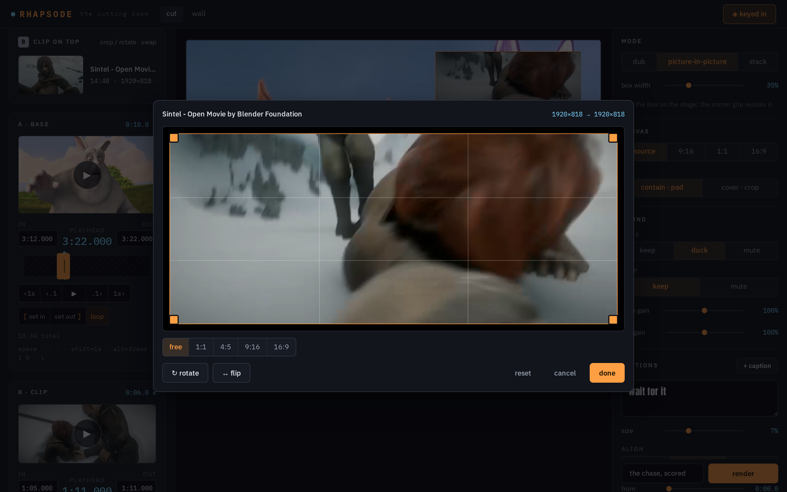
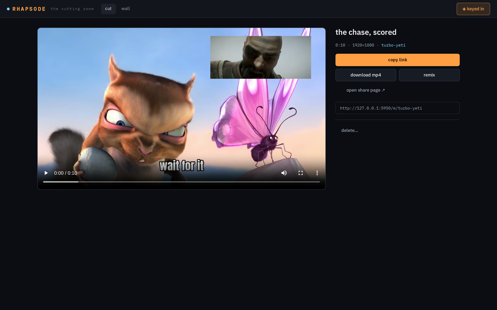
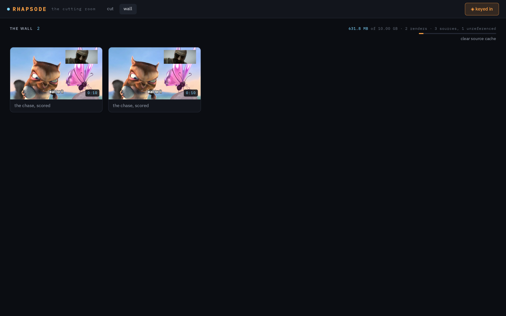
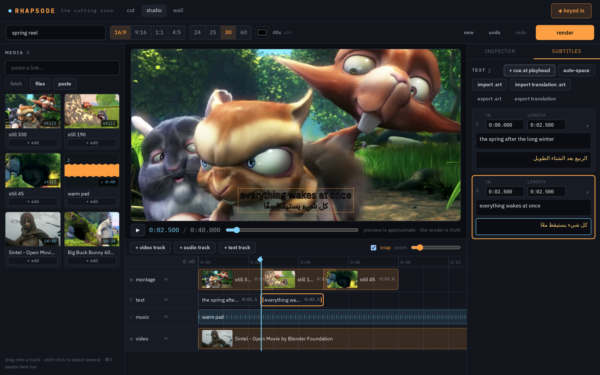

Take a piece of one thing.
Lay it on another.
Paste a YouTube link or drop a clip from your phone, cut the seconds you want, and stitch them onto a photo, a clip, or another link — as a dub, a picture-in-picture, or a stack. Render on your own GPU. Share a link that unfurls.

A cutting room, not a timeline app
One base, one clip on top, one decision about how they meet. That is the entire model, and it is enough for a song over a video, a headline over a photo, a reaction beside a clip.
Anything yt-dlp reads, or your camera roll
YouTube, X, TikTok, Instagram, Vimeo. Long videos are fetched as a fifteen-minute window around the moment you point at, never whole. Phone clips stream straight to disk, HEVC and portrait rotation included.
Frame-honest trimming
A playhead you can drive from the keyboard, typed in and out points, and a proxy derived from the same file the render reads — so the seconds you choose are exactly the seconds ffmpeg cuts.
One pure path to ffmpeg
The recipe is the only truth. A pure function turns it into a single ffmpeg command, pinned by tests down to the filter strings. NVENC when a GPU answers, libx264 otherwise.
Links that unfurl, files that travel
Every render gets a two-word address with OpenGraph video tags for WhatsApp, Telegram, X and iMessage — plus a plain mp4 download, and a remix door that reopens the recipe.
How it works
The browser edits a recipe. The server validates it, renders it, and keeps it with the result so anyone with the key can remix.
yt-dlp or a streamed upload lands one original per source under a random id.
ffmpeg derives a scrub-friendly h264 proxy and a thumbnail from that same file.
Cuts, mode, audio, captions, canvas — a zod schema both sides speak.
A pure function maps the recipe to argv: trims, fits, overlay, mix, drawtext.
One ffmpeg run with live progress over SSE; poster; ffprobe; publish.
// shared/recipe.ts — the whole composition { base: { kind: "image", source: "7a45…" }, overlay: { source: "1e0d…", in: 62.0, out: 68.5, at: 0 }, mode: { kind: "dub" }, audio: { base: "duck", overlay: "keep" }, captions:[{ text: "never gonna", y: 0.9 }], output: { aspect: "9:16", fit: "contain" } }
- Never
-shortest. Output length is an explicit-t; every audio lane is padded; mixes carrynormalize=0. - Ducking is a real sidechain compressor, not a volume step — the base dips under the clip and recovers.
- Silent files never break the graph. A lane the mode wants but the file lacks is replaced by generated silence.
- Captions go through files, so any text renders; the drawtext option order that ffmpeg 9 quietly requires is pinned by a test.
- Restarts are honest. Whatever was mid-flight is marked failed; the client re-submits.
Three ways two things can meet
Plus captions on any of them, timed if you like.
The clip's sound over the base
Keep the base's own audio, duck it under the clip, or mute it. The clip's picture is not shown. The classic "this song over this video".
The clip in a box you drag
Fractional coordinates, resizable from the corner, placed anywhere on a 9:16, 1:1, 16:9 or source-shaped canvas.
Side by side, or one above the other
The clip takes the top, bottom, left or right lane, centred on black until its moment comes.
Cut, crop, place, caption
A crop and rotate panel per source, a draggable box for the picture-in-picture, captions you drag into place, and a result page that hands you the link.



The studio: a multitrack cutting room
When two pieces are not enough. Any number of video, music and text tracks; photos that pan and zoom; clips that dissolve into each other; subtitles with a translation line under each cue. Still one recipe, still one ffmpeg command.

Video, music, text — as many as you need
Visual tracks stack; audio tracks mix with gain and fades; text tracks burn in. Drag clips along a track or between tracks, trim from either edge, split at the playhead, undo anything.
Montage in one click
Pick a handful of stills and make a montage: back to back, crossfaded, with alternating Ken Burns moves. Drop a music bed under it and fit it to the sequence with a fade-out.
Subtitles that speak two languages
A table of cues with a second line each — Arabic renders shaped and right-to-left. Import an SRT and a translation SRT, export both. Outline, clean, or boxed styles.
Free boxes, opacity, fades
Any clip can float in a box you drag on the monitor, at any opacity, fading in and out with alpha so what is beneath shows through.

Built for the phone in your hand
Three steps — pieces, cut, compose — sized for thumbs. Paste a link, pick a photo from the camera roll, drag the handles, render. The job keeps going if you switch apps.
- Paste anything. An image from the clipboard, a dragged file, a copied link — they land in the right slot.
- Exact times. Type an in and an out point, or step with the arrows and set them at the playhead.
- Live preview. Two media elements kept in step in the browser; the render is the truth.


Run it yourself
A single npm package: a Vite + React client, a Hono server that Node runs directly, and a shared recipe schema. Media and a SQLite file live under data/.
git clone https://github.com/ZahakJ/rhapsode && cd rhapsode cp .env.example .env # set INVITE_KEY — viewing is public, creating needs the key npm install npm run dev:server # API on :5950 npm run dev # UI on :5951
- Needs Node ≥ 24, ffmpeg / ffprobe, and yt-dlp on the PATH. An NVIDIA GPU is used when present.
- Done bar:
npm run typecheck && npm test && npm run build && npm run smoke— the tests render real clips; the smoke drives the whole UI in headless Chromium. - Deploy: a systemd user unit and a Cloudflare tunnel are in
deploy/and the README. The server binds loopback only. - Honest limits: renders are capped at 180 s; YouTube occasionally serves a session where only 360p survives without a PO-token provider.